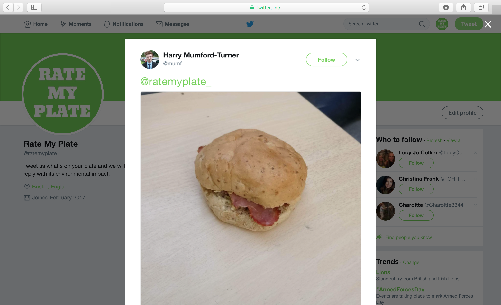
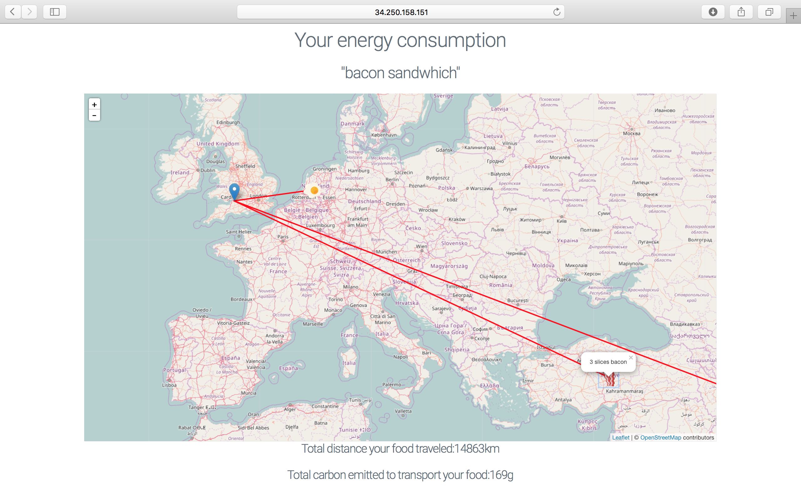
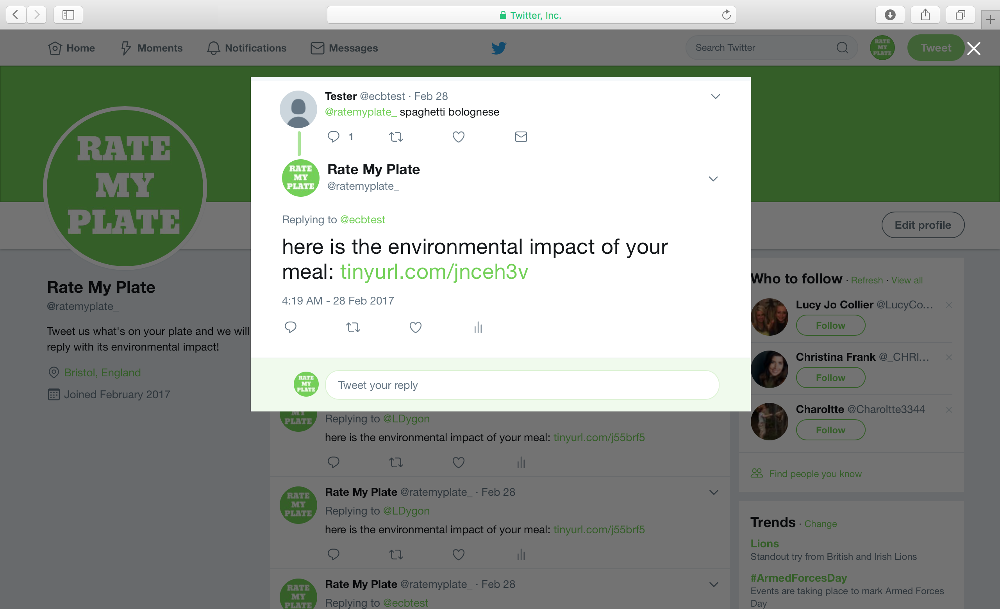
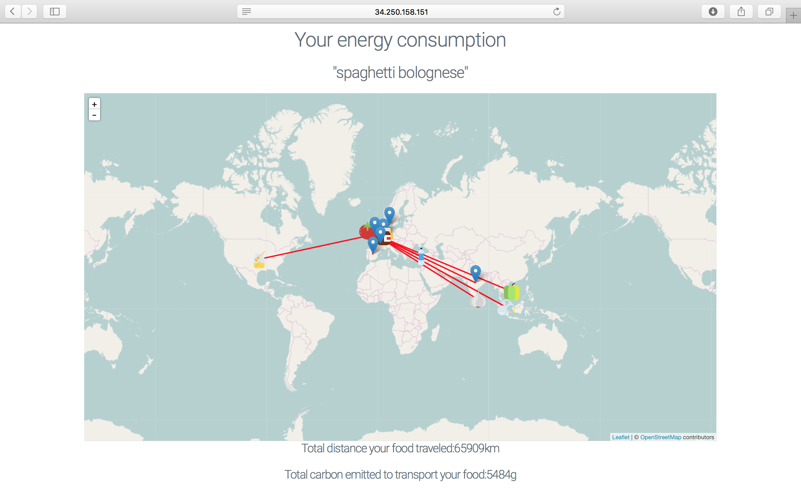

PROJECT / Rate My Plate / Feb 17
In a 24-hour environment-themed hackathon, my team and I built a Twitter bot (no longer running live) which calculates the carbon footprint of a meal from a tweeted photo.
Third party Twitter API libraries were used to retrieve and process tweets, and then either the Python Natural Language Toolkit was used to determine the meal from a tweet with text content, or a model trained using TensorFlow was used to classify meals sent using photographs. A range of databases with different food and transportation sources and costs allowed the ingredients of the meal to be determined and the carbon footprint calculated. This information was then displayed visually on an interactive map using the Javascript Leaflet library, and returned to the user via a URL reply to their original tweet.
My contributions to the work included implementation of all the bot functionality, and the front-end aspects of the resulting map webpage displayed to the user. The hackathon was sponsored by Boeing, who awarded our project the prize for 'Best Implemented Prototype'.



